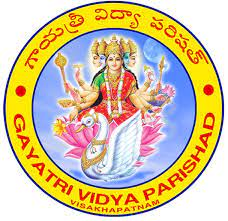

About GVPCE(A)
The Gayatri Vidya Parishad College of Engineering [GVPCE] had its humble beginning in December 1996 with 4 branches and 200 intake established under the parent society ‘Gayatri Vidya Parishad’(GVP), a non-profitable organization comprising of noted educationists and eminent philanthropists who have a missionary zeal to provide quality technical education. From that point on, the college has very quickly established itself as one of the most-preferred self-financing engineering colleges in Andhra Pradesh offering 10 B.Tech. Programs, 9 M.Tech. and one MCA Program approved by AICTE with an intake of 1362.